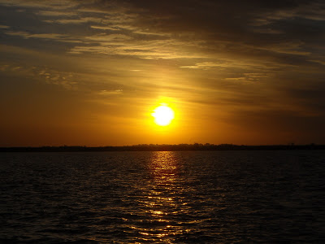

Site de Pesca

Pro Anglers
Pro Anglers
Desde la orilla, los 9 pescadores miraban el rio, estudiaban sus opciones. -Hoy haremos una excelente pesca- dijo confiadamente Fernando “Pipo” Soria. – En lugar de seguir charlando, mojemos unos señuelos- dijo Maxi “9 Rulemanes” Luna. El cabello blanquecino del joven por el pasar de los años, denotaba una basta experiencia, podria ser en cualquier ambito de la vida, pero con el correr de los minutos, demostro que la experiencia era en el Spinning logrando 2 capturas. El Torneo estaba a punto de comenzar. Al unisono, se inclinaron los guias sobre los truckers logrando despejarlos del barro de la costa y partir rumbo al delirio. – Vamos Ahora! Grito Lodi, no aguantaba mas, no veia las horas de que comenzara la travesia por ese rio nunca antes visitado por el. Arrancaron los motores y los jóvenes se aferraron al trucker. - ¿Adonde vamos?- Pregunto Diego “Botellita” Quinteros. – A pescar- le contesto en forma burlona Jose “Sapazo” Luna. – Eso pense!- dijo Diego riendo. -Seran las 9 en unos minutos. Y quiero estar ahí presente para intentar capturar una boga antes de esa hora. Se dirigian a los arroyos, avanzando por lugares donde antes habia solo tierra, arboles y hasta casas, que producto del gran aumento de caudal, estaba todo inundado. A sus espaldas, iluminados por el sol, estaba la costa de Sauce Viejo.
Alli estaba el rancho- Grito Martin Arguello. A lo cual el guia lo afirmo con algo de nostalgia, recordando los grandes y sabrosos almuerzos que se hacian ahí, que producto de la altura del Coronda, solo se lograba vislumbrar la chimenea del mismo. El momento de cruzar la laguna, fue una excelente señal para los 9 Pescadores Deportivos. Extasiados y con sus caras dibujadas por una sonrisa, observaban atentos como miles de Doradillos saltaban por detrás de sus embarcaciones. – Hoy nos hacemos un picnic- Gritaba Lucio. Al llegar cada uno a su lugar, ya tenian preparadas sus cañas y lineas, deseosas de ser arrojadas al agua. Rompieron las bolsas de tripa de pollo y sabalo y empezaron a encarnar en esos anzuelos previamente afilados por algunos. Oscar “Ronquidos de Cliptodonte en Celos” agarraba con las puntitas de sus dedos la tripa, espantado por el olor putrefactos que estas emanaban y por su sensación. El viejo Lobo de Mojarritas, Jackson, le aconsejo a Oscar que se impregnara de entrada con las tripas de pollo, que a la larga iba a tener que hacerlo. Cuando el bote de los “Cindor Team” integrado por Diego, Jose y Fernando, logro ponerse en posición casi sobre el cauce del arroyo, estos arrojaron el ancla, logrando encallarse sobre el mismo. Por el caudal que traia el rio por esos dias, decidieron que las lineas tendrian que ir con plomos de 70gr. Con un rapido balanceo y quiebre de cintura, Jose trajo ya de vuelta el anzuelo sin carnada. Todo esto desperto en los tripulantes una gran emocion. Fernando saco la linea, una linea armada con una madre de no mas de 50 cm, con un plomo al final, la madre tenia una brazolada de casi un metro de largo con un chicote de 10cm de acero porque sabia que de vez en cuando se prenderian los doradillos con sus filosos dientes. Cuando percibio que la plomada toco fondo, trabo el rotativo, sostuvo el nylon para percibir el pique. La corriente era muy fuerte, la caña de 25lb se doblaba demasiado, asi que se percataron que debian pescar al pulso y no viendo la puntera de la caña como muchos suelen hacer. Enseguida, los 3 botes comenzaron a pescar una muy aceptables bogas que promediaban el kilo y medio pero por la correntada, presentaban una lucha muy feroz, tambien se prendian varios amarillos chicos y hasta algunos Doradillos. -Pescaditos para encarnar- se burlo Diego sobre los peces obtenidos por Jose. En el otro bote, con mucha habilidad, Maximo se las arreglaba para vigilar su linea, mientras que con la mano derecha tenia la caña, con la izquierda no soltaba el vaso de fernet, que a esas alturas de la madrugada era infaltable, le daba un condimento especial al paisaje que impone el Rio Coronda en todo su entorno. El sol se elevaba ya en el horizonte, calentando el aire y haciendo necesario algun tipo de refresco, que en este momento se les representaba como el famoso “Fernando”, y del bueno.
 Vamos Diego!- grito Jose “Sapo del Año” Luna. Fernando y yo habremos llenado el bote antes que vos saques el primero. – No queremos que seas el mas Sapo!-. (El torneo que habian organizado, consistia en 9 premios: al Dorado Mayor, Boga Mayor, Pez Mayor, Mayor Cantidad y al Mas Sapo, los restantes, eran solo premios estimulos. Cada uno podia ganar un solo trofeo, cosa que todos regresaran a sus hogares con algun trofeo.
- Siempre preferi la Calidad antes que la cantidad- Le contesto Diego.
- Bueno, ya que no tienes nada mejor que hacer, porque no sirves algo de picada- le retruco Jose mientras daba otro cañazo certero.
Habria acotado algo Fernando en ese momento, pero sintio un tiron en la linea que el tenia entre sus dedos, habia sido algo grande ya que se los habia marcado. Sostuvo la caña con sus dos manos hasta que la fuerte lucha ceso un poco, de ahí empezo a recoger hasta que no pudo ganar mas linea. Se trataba de alguno grande intuian. – Esto no pudo ser un pez- decia Diego- No hay peces tan grandes- debes de haberte enganchado otra vez en el fondo. Fernando no le respondio. Sus rodillas se apretaban contra el asiento. Sus dientes estaban apretados y se notaba que en su cara, lentamente se desdibujaba la sonrisa y empezaba aparecer el cansancio. En un momento, no puede recoger mas linea y empieza a tocar el nylon como si fuera Angus en pleno recital de AC/DC, tratando de que las vibraciones molestara pensando que era una raya y estas lograran desprenderla del fondo. En el momento en que puede recoger un par de vueltas Diego pega un cañazo y a lo lejos se ve saltar un gran Dorado, que seguramente seria el mas grande de la jornada. A lo cual Fernando decide recoger una linea que podia entorpecer la linea de Diego y le da su caña al guia. Luego de un rato, no solamente Diego habia traido el Dorado al bote, que luego seria el mas grande de la jornada, sino que Fernando, como habian sospechado, habia logrado la captura de una linda raya, obteniendo a posteriori el trofeo del Pez mas Grande, junto con Diego el de Mayor Dorado.. El bote del Equipo “Cindor Team” se aseguraba por lo menos 2 trofeos.
Vamos Diego!- grito Jose “Sapo del Año” Luna. Fernando y yo habremos llenado el bote antes que vos saques el primero. – No queremos que seas el mas Sapo!-. (El torneo que habian organizado, consistia en 9 premios: al Dorado Mayor, Boga Mayor, Pez Mayor, Mayor Cantidad y al Mas Sapo, los restantes, eran solo premios estimulos. Cada uno podia ganar un solo trofeo, cosa que todos regresaran a sus hogares con algun trofeo.
- Siempre preferi la Calidad antes que la cantidad- Le contesto Diego.
- Bueno, ya que no tienes nada mejor que hacer, porque no sirves algo de picada- le retruco Jose mientras daba otro cañazo certero.
Habria acotado algo Fernando en ese momento, pero sintio un tiron en la linea que el tenia entre sus dedos, habia sido algo grande ya que se los habia marcado. Sostuvo la caña con sus dos manos hasta que la fuerte lucha ceso un poco, de ahí empezo a recoger hasta que no pudo ganar mas linea. Se trataba de alguno grande intuian. – Esto no pudo ser un pez- decia Diego- No hay peces tan grandes- debes de haberte enganchado otra vez en el fondo. Fernando no le respondio. Sus rodillas se apretaban contra el asiento. Sus dientes estaban apretados y se notaba que en su cara, lentamente se desdibujaba la sonrisa y empezaba aparecer el cansancio. En un momento, no puede recoger mas linea y empieza a tocar el nylon como si fuera Angus en pleno recital de AC/DC, tratando de que las vibraciones molestara pensando que era una raya y estas lograran desprenderla del fondo. En el momento en que puede recoger un par de vueltas Diego pega un cañazo y a lo lejos se ve saltar un gran Dorado, que seguramente seria el mas grande de la jornada. A lo cual Fernando decide recoger una linea que podia entorpecer la linea de Diego y le da su caña al guia. Luego de un rato, no solamente Diego habia traido el Dorado al bote, que luego seria el mas grande de la jornada, sino que Fernando, como habian sospechado, habia logrado la captura de una linda raya, obteniendo a posteriori el trofeo del Pez mas Grande, junto con Diego el de Mayor Dorado.. El bote del Equipo “Cindor Team” se aseguraba por lo menos 2 trofeos.
En un momento los “Cindor Team” se detienen en la costa a pescar mojarritas. Mientras Jose estaba sacando varias ya, Diego y Fernando renegaban con el armado de sus mojarreras. – Son malisimos!- Decia Jose en forma burlona. – Ya te voy a enseñar a pescar en serio!- Le contestaba Fernando. Ni que el destino lo hubiera hecho a la medida a la venganza. Fernando baja del Trucker, tira la linea mojarrera al charquito, se hunde la boyita y en el primer intento no puede recoger la linea, un poquito mas de fuerza y CHANN!!! Doradillo. – Plin Plin, Aprende a Pescar!!!- Se le reia Fernando A Jose en la cara. Diego le acompañaba en la cargada. Habia sido primer tiro y no una mojarra, sino un doradillo. Segundo tiro y un Pira Pita. La gastada no solo era del Diego y Fernando, sino hasta del mismisimo Guia. Tercer tiro y otro Doradillo, pero que este logra abrir el nudo que habia hecho Fernando, un nudo simple, que serviria solo para mojarritas, nunca se iba a imaginar que podia sacar Dorados con mojarrera de costa. Los botes se comunicaban mediante Handy en mano. Y en el handy del bote de “Cindor Team”se escucha.- Ateennto Torri, Carnaval de Chafalotes!!!!- Gritaba Maxi desde el otro lado. El Bote de “Los Deprimentes” se estaba haciendo un festin, mojando cuanto señuelito querian, que al instante de caer al agua, eran cazados vorazmente por un cadumen de hambrientos chafalotes. Sus manos estaban cansadas ya, sus muñecos todos mordisqueados. Tal era la alegria de estos muchachos, que ni siquiera celebraban con esa Bebida espirituosa, que sirve para festejar cualquier ocasión, ojo, con la buena, la del Aguilucho, la demas Buhhhhh. No importaba que señuelo era, si de profundidad, de flote, plop o nada, ya que no alcanzaban a mojarse todo, que estaban entre los dientes de un Chafalote. Todo esta inolvidable sensación sucedio hasta que una lancha paso por encima del cardumen y este huyo despavoridamente. Se les acabo la diversión a los jóvenes, que en la vorágine de seguir pescando, ni tiempo de sacarse una foto para el recuerdo. Mas tarde, los chicos llegarian a la conclusión, de que en este caso, habia sido muy lindo no tener muchas fotos con los recuerdos de esa jornada, ya que eso indicaba que no habian tenido ni tiempo de posar con sus adversarios por el constante pique que habia. Volviendo a ese mismo dia. En el Bote de los “xxxxx”, la imagen no habia variado mucho. La cara de Martin denotaba una gran alegria, producto del costillar que habia deglutido la noche anterior. (Todos sabemos que cuando encima el precio es la mitad que en Cordoba, 15,50 $/kg, es mas rico.) Mientras estaba abstraido, recordando el gustito de las costillas a la leña, algo abruptamente lo despierta. Era el famoso sonido de la chicharra de los rotativos cuando en este caso el naylon es robado por un pez. Se despierta de ese trance que lo mantenia en vilo, y metio un cañazo certero. -Cañalo otra vez que es grande!- Le grito Oscar “EL terror de las amigdalas”. Mediante otro quiebre de cintura del muchacho Martin, el anzuelo se incrustaba mas en la boca de ese pescado. Se habia dado cuenta que el pez ya estaba clavado, ahora solo queria disfrutarlo. Estuvo un rato peleandolo, ya que en la zona habia mucho camalotales, ramas y demas. Casi perdiendo varias veces la partida, pero la experiencia de nuestro amigo no lo iba a permitir. – Copo!- Gritaba Lucio cuando el Pati estaba acercandose el Bote. -Que copo ni copo!- Le contesto Martin. Era muy chico ese copo para el tamaño del Pati que habia logrado capturar. Era una muy linda pieza que rondaba los 5 kg. Esa pelea merecia una foto. Mientras Oscar se preparaba para sacarle una foto a su amigo, siente que la caña se le iba de la mano. -Dale Bol….., otro mas!- Le grito Martin. Asi que por el desespero de perderlo, tiro la maquina de fotos a cualquier lado y se mando un chamame arriba del bote para propinarle otro certero cañazo. Otra vez la misma historia. Foto de los pescadores y sus pescados.  Quiero agradecer a todos mis fieles amigos que me acompañaron y con ellos pudimos hacer que esta historia sea verdadera, no en los minimos detalles, pero si en la mayoria. Los ganadores de los premios fueron: Diego Quinteros (dorado mayor), Maximo Luna ( Boga Mayor), Fernando Soria (Pez Mayor), Lodi (Mas cuatrero) y el infaltable Sapo del Año para Jose Luna. Los demas: Martin Barguello, Lucio, Oscar y el Viejo Jose Luis Ayetti, conocido como Jackson quienes obtuvieron los Premios estimulos La Voz del I.
La Pesca en Sauce Viejo esta Excelente. Hay mucho pescado chico y tambien mucho pescado Grande. Logramos capturas de: Doradillos, Pira Pita, Boga, Manduve, Manguruyu, Chafalote, Raya, Amarillo, Armado, Palometa, Pati y algunas especies mas que no recuerdo en este momento. El rio esta muy alto, asi que se recomiendo pescar por lo menos con plomo de 70gr. Atenti al precio del Asado, dato no menor. EL kilo de costillar cuesta 15.50$, el de matambre 16$. Asi que ni se les ocurra llevar carne desde Cordoba. Hay un frigorifico cuando uno va por la Ruta 19 hasta llegar a Santo Tome, en diagonal tiene una estacion de servicio, al frente de ella, esta el Frigorifico de una marca Importante de embutidos y carnes. Ellos poseen ese precio. Tambien tienen embutidos, que es donde compre para la picadas arriba de los botes.